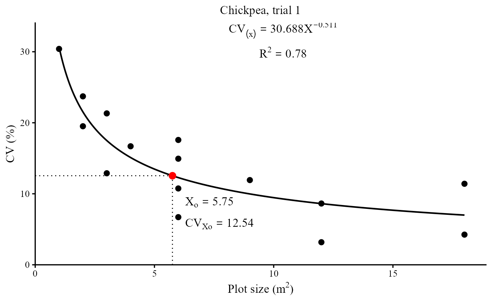

fit_mcm.RdEstimates the optimal plot size by the modified maximum curvature method of Meier & Lessman (1971). The relationship \(CV = a\,X^{-b}\) is fit by linear regression of \(\log CV\) on \(\log X\), and the optimum is the point of maximum curvature $$X_c = \left[ a^2 b^2 (2b + 1) / (b + 2) \right]^{1/(2b + 2)}.$$
fit_mcm(
.data = NULL,
x = NULL,
cv = NULL,
df = NULL,
trial = NULL,
method = c("nls", "loglinear"),
bootstrap = FALSE,
n_boot = 1000,
conf_level = 0.95
)optional data frame; when supplied the other arguments are column names.
numeric vectors (plot size and CV in percent), or column names.
optional degrees of freedom per point for the Federer (1955)
weighting, as a vector or a column name. NULL = unweighted.
optional column name identifying the trial.
estimation method: "nls" (default, original scale;
reproduces the chickpea article) or "loglinear" (Meier & Lessman
regression).
logical; if TRUE, also estimate the uncertainty of
\(X_c\) by resampling the shapes (default FALSE). See the section
"Uncertainty of the optimum".
number of bootstrap resamples (default 1000), used only when
bootstrap = TRUE.
confidence level of the percentile interval (default 0.95),
used only when bootstrap = TRUE.
An "mcm_fit" (single series) or "mcm_multi" (per trial).
With bootstrap = TRUE the fit also carries bootstrap, a list
with ci, se, ci_b, replicates, n_valid
and conf_level.
method = "nls" (default) fits \(CV = a X^{-b}\) by nonlinear least
squares on the original scale (seeded from the log-log fit), reproducing
Cargnelutti Filho et al. (2025) and the modern Brazilian plot-size papers.
method = "loglinear" fits the line \(\log CV = \log a - b \log X\)
(the classic Meier & Lessman route). If "nls" fails to converge it
falls back to the log-linear estimate with a warning.
Pass df, the degrees of freedom of each point, to weight the fit as
proposed by Federer (1955); this down-weights the CV of larger plot sizes,
estimated from fewer plots. Some authors apply it, others do not;
df = NULL (default) is unweighted. The cost-factor modification
(K1, K2) of the classic method is not applied; \(X_c\) is in the units of
x.
bootstrap = TRUE resamples the shapes with replacement, refits, and
returns a percentile interval for \(X_c\) in $bootstrap$ci.
Unlike [fit_lrp()] and [fit_qrp()], there is no test for the existence of the
optimum, because there is no breakpoint whose presence is in doubt: the curve
\(CV = a X^{-b}\) has a point of maximum curvature whenever \(b > 0\).
What can be questioned is \(b\). Its bootstrap interval is therefore
reported as $bootstrap$ci_b; if that interval covers zero, the CV does
not demonstrably fall with plot size and \(X_c\) carries no meaning.
Set the random seed before calling to make the result reproducible.
fit_mcm(x, cv, df = NULL) returns an "mcm_fit".
fit_mcm(.data, x = "x", cv = "cv", df = "df",
trial = "trial"); with trial, one model per trial is fit and an
"mcm_multi" object is returned.
Meier, V. D. & Lessman, K. J. (1971). Estimation of optimum field plot shape
and size for testing yield in Crambe abyssinica Hochst.
Crop Science, 11, 648-650.
Federer, W. T. (1955). Experimental Design. Macmillan, New York.
[fit_lrp()], [fit_qrp()], [plot.mcm_fit()]
## Chickpea uniformity trial, trial 1 (Cargnelutti Filho et al., 2025)
X <- c(1, 2, 2, 3, 3, 4, 6, 6, 6, 6, 9, 12, 12, 18, 18)
CV1 <- c(30.40, 19.51, 23.72, 12.89, 21.32, 16.69, 6.71, 10.75,
17.58, 14.94, 11.93, 3.18, 8.63, 4.25, 11.41)
fit <- fit_mcm(X, CV1)
fit
#> Modified Maximum Curvature (MCM) fit
#> Method: nls
#> Weighted by df: FALSE
#> Breakpoint (Xo): 5.755
#> CV at breakpoint: 12.542
#> R2: 0.775 RMSE: 3.427
## The fitted decay CV = a * X^-b, and the CV expected at unobserved sizes
coef(fit)
#> a b
#> 30.687871 0.511278
predict(fit, newx = c(2, 5, 7.5, 15))
#> [1] 21.530630 13.477171 10.953859 7.685235
## "loglinear" is the classic Meier & Lessman route (regression of log CV on
## log X); "nls" (default) fits on the original scale and is what the modern
## plot-size articles report. They rarely agree exactly.
c(nls = unname(fit$parameters["Breakpoint"]),
loglinear = unname(fit_mcm(X, CV1, method = "loglinear")$parameters["Breakpoint"]))
#> nls loglinear
#> 5.754886 6.025869
## Federer (1955) weighting: the CV of a large plot size rests on fewer
## plots, so pass the degrees of freedom of each point to down-weight it.
n_plots <- 72 / X
fit_mcm(X, CV1, df = n_plots - 1)$parameters["Breakpoint"]
#> Breakpoint
#> 5.700355
## Uncertainty of Xc, off by default. There is no existence test here: the
## curve always has a maximum-curvature point when b > 0, so what gets an
## interval is b itself.
set.seed(1)
unc <- fit_mcm(X, CV1, bootstrap = TRUE, n_boot = 500)
unc
#> Modified Maximum Curvature (MCM) fit
#> Method: nls
#> Weighted by df: FALSE
#> Breakpoint (Xo): 5.755
#> 95% CI (percentile): [4.810, 6.897] SE 0.526
#> exponent b: [0.369, 0.704] (500 resamples)
#> CV at breakpoint: 12.542
#> R2: 0.775 RMSE: 3.427
unc$bootstrap$ci_b
#> [1] 0.3689803 0.7040898
## One model per trial
trials <- rbind(
data.frame(x = X, cv = CV1, trial = "T1"),
data.frame(x = X, cv = CV1 * 0.85, trial = "T2")
)
fit_mcm(trials, x = "x", cv = "cv", trial = "trial")$summary
#> Using x = 'x', cv = 'cv', trial = 'trial' -> 2 trials.
#> trial a b breakpoint plateau R2 RMSE method weighted
#> 1 T1 30.6879 0.5113 5.7549 12.5423 0.7753 3.4272 nls FALSE
#> 2 T2 26.0847 0.5113 5.1681 11.2635 0.7753 2.9132 nls FALSE
# \donttest{
plot(fit, title = "Chickpea, trial 1")

## The three CV-based methods on the same data. MCM is the most
## conservative and QRP the most generous; the ordering is systematic.
c(MCM = unname(fit$parameters["Breakpoint"]),
LRP = unname(fit_lrp(X, CV1, step = 0.01)$parameters["Breakpoint"]),
QRP = unname(fit_qrp(X, CV1, step = 0.01)$parameters["Breakpoint"]))
#> MCM LRP QRP
#> 5.754886 7.440000 10.960000
# }